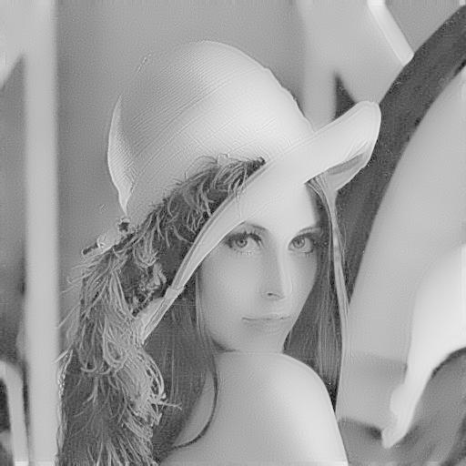
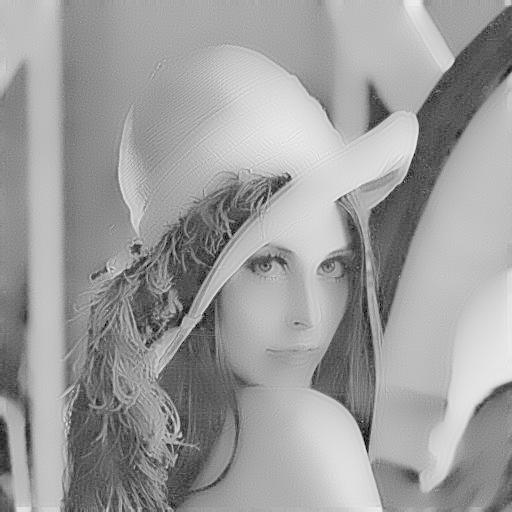

This page shows some examples of Jsrtaa being used, along with the Java code to do so. Note that the command line interface can do these as well, though it is obviously not as full-fledged as using the library directly.
First, let's do a simple resize of an image, which happens to be one of my favourite paintings, using bilinear and bicubic interpolation. Here's the original:
// Resize by interpolation final ImageTTAA orig = new ImageTTAA(PATH + "5.jpg"); ImageTTAA smaller = Interpolation.bilinearInterpolate(orig, orig.width/2, orig.height/2); smaller.saveAs(PATH + "small.png"); // smaller image ImageTTAA interped = Interpolation.bicubicInterpolate(smaller, orig.width, orig.height); interped.saveAs(PATH + "big.png"); // back to full sizeHere's the output
What about animated GIFs? Let's resize and Gaussian blur one:
GifTTAA gif = new GifTTAA(new File(PATH + "11.gif"));
DiscreteKernel g = new NormedGaussianBlurKernel(2,3); // sigma = 2, radius = 3
for(int i = 0; i < gif.getNumImages(); ++i){
ImageTTAA blurred = SignalProcessing.convolve(gif.getImage(i), g); // blur the frame
gif.setImage(i, Interpolation.piecewiseBicubicAkimaSplineInterpolate(blurred, 300, 190)); // resize it
}
gif.saveAs(PATH + "test_2.gif");
Let's look at noising and denoising. First, the original image:
// Add noise to an image after resizing it ImageTTAA img = Interpolation.piecewiseBicubicAkimaSplineInterpolate(new ImageTTAA(PATH + "1.jpg"),(int)(375*1.5),(int)(300*1.5)); img.saveAs(PATH + "noiseless2.jpg"); ImageTTAA noisy = Noise.addGaussianNoiseToImage(img , 0, 20); // mu = 0, sigma = 25 noisy.saveAs(PATH + "gaussNoise2.jpg"); // Denoise it with the bilateral filter ImageTTAA denoised = BilateralFilter.denoiseByBilateralFilter(noisy, 50, 20, 20); // h, rho, radius denoised.saveAs(PATH + "bilatDenoise3.png");
Note the edge preservation in the denoised image!
Using this code (for the first image):
LayeredMatrix m = (new ImageTTAA(PATH + "2.jpg")).convertToLayeredMatrix(); // Real-valued representation of an image VectorCalculus.sobelGradientMagnitude(m).convertToImageTTAA().saveAs(PATH + "sobelGrad2.png"); VectorCalculus.generateGradientMagnitudeImage(m.convertToImageTTAA()).saveAs(PATH + "defaultGrad2.png");
Now let's look at the Gaussian and mean curvature of the image we denoised above:
Kind of hard to see anything eh? Let's log normalize it. Now you can at least see the outlines.
And let's also show the Laplacian over the image:
All these transformations are coded as follows:
// Curvatures LayeredMatrix c = (new ImageTTAA(PATH + "1.jpg")).convertToLayeredMatrix(); ImageTTAA gc = DifferentialGeometry.gaussianCurvature(c).convertToImageTTAA(); ImageTTAA mc = DifferentialGeometry.meanCurvature(c).convertToImageTTAA(); gc.saveAs(PATH + "gaussCurv.png"); mc.saveAs(PATH + "meanCurv.png"); // They're pretty faint, so log norm them gc.generateLogNormedImage().saveAs(PATH + "gaussCurv-lognorm.png"); mc.generateLogNormedImage().saveAs(PATH + "meanCurv-lognorm.png"); // Laplacian LayeredMatrix forLap = (new ImageTTAA(PATH + "4.jpg")).convertToLayeredMatrix(); VectorCalculus.laplacianMatrix(forLap).convertToImageTTAA().generateLogNormedImage().saveAs(PATH + "lap2-log.png");
Now, let's look at the anisotropic diffusion methods. Note the preservation of edges as the pixels bleed everywhere as if it were diffusing ink, and how the stronger edges better stop the diffusion. Cool. First, the Perona-Malik algorithm:
// Perona-Malik diffusion BufferedImage bi = ImageIO.read(new File(PATH + "3.jpg")); // Convert from a BufferedImage for fun ImageTTAA imgToDiffuse = ImageConvert.convertBufferedImageToImageTtaa(bi); ImageWrite.writeImage( // write it out a different way for fun PeronaMalikAnisotropicDiffusion.runPeronaMalikAnisotropicDiffusionOnImage( imgToDiffuse, 40, 25, 0.65, PeronaMalikDiffusionConductanceType.EXP, false ) , // img, k, numIters, lambda, g, smoothBeforeGradient PATH + "diffused4.png" // output file name );
And now the curvature-driven diffusion method, used on the classic Lena image:
// Curvature-driven diffusion ImageTTAA curr = new ImageTTAA(PATH + "10.jpg"); CurvatureDrivenAnisotropicDiffusion.runCurvatureDrivenAnisotropicDiffusion( curr.convertToLayeredMatrix(), // Input image (real-valued form) CurvatureType.MEAN, // Curvature type CurvatureDiffusivityFunction.IDENTITY, // Curvature diffusivity function 10, // numIterations 0.01, // temporal step size 1, // spatial step size 0.9 // lambda ).convertToImageTTAA().saveAs(PATH + "curvDiffuse2.jpg");
 

Lastly, let's look at the image distance calculators, using RMSE and Jensen-Shannon divergence. Here's the images:
ImageTTAA i1 = Interpolation.bilinearInterpolate(new ImageTTAA(PATH + "6.jpg"),550,550); ImageTTAA i1_rot = Interpolation.bilinearInterpolate(new ImageTTAA(PATH + "6-rot.jpg"),550,550); ImageTTAA i2 = Interpolation.bilinearInterpolate(new ImageTTAA(PATH + "7.jpg"),550,550); i1.saveAs(PATH + "i1.png"); i1_rot.saveAs(PATH + "i1_rot.png"); i2.saveAs(PATH + "i2.png"); System.out.println(ImageMetrics.rmse(i1, i2)); System.out.println(ImageMetrics.rmse(i1, i1_rot)); System.out.println(ImageMetrics.computeIndependentJensenShannonDivergence(i1, i2)); System.out.println(ImageMetrics.computeIndependentJensenShannonDivergence(i1, i1_rot));
This outputs: 11.205015997136218, 10.526272120056143, 0.16143498466910586, 0.013319404644832904. Notice how the rmse thinks that the rotated image is as different from the original as it is from the completely different image, whereas the information-theoretic metric considers the rotated and original images very similar.